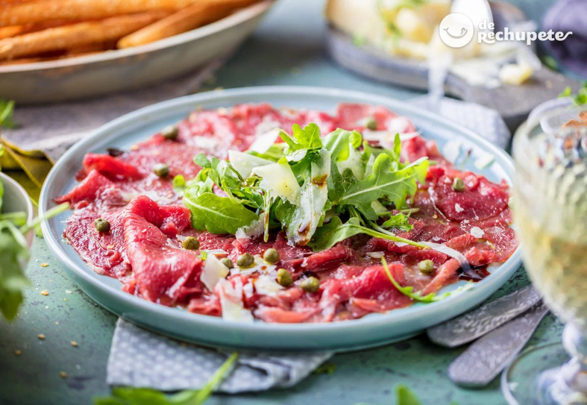
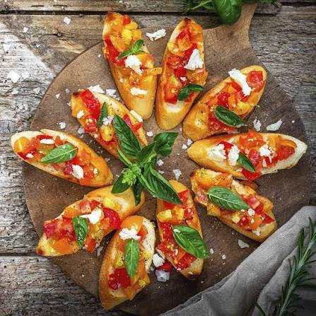
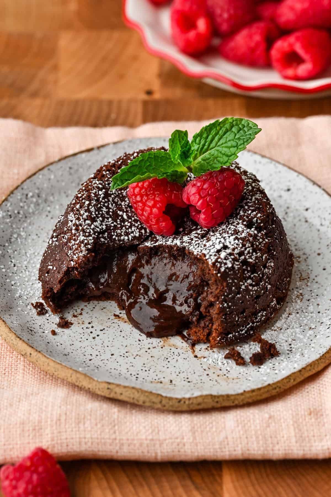

RD$ 550
Entradas
Carpaccio de Pulpo
Finas láminas de pulpo marinadas en limón sutil, aceite de oliva virgen extra, alcaparras baby y lacas de parmesano.

Bienvenido a la experiencia digital de MesaViva Restaurante. Explora nuestra carta seleccionando categorías, descubre ingredientes frescos y disfruta de una propuesta culinaria única.
Filtra por categoría para explorar las creaciones del chef.

RD$ 550Finas láminas de pulpo marinadas en limón sutil, aceite de oliva virgen extra, alcaparras baby y lacas de parmesano.

RD$ 420Pan de masa madre tostado, tomates cherry confitados, burrata cremosa e infusión de aceite de trufa blanca.
.jpeg) RD$ 890
RD$ 890
Arroz arborio cremoso cocinado con caldo de vegetales, mix de setas silvestres, mantequilla de grass-fed y queso parmesano añejo.
 RD$ 1,150
RD$ 1,150
Corte tierno de res sellado a la perfección, bañado en reducción de vino tinto y acompañado de puré de yuca trufado.
 RD$ 380
RD$ 380
Clásico pastel de queso cremoso sobre base de galleta de mantequilla, cubierto con coulis fresco de maracuyá de la región.

RD$ 450Bizcocho tibio de chocolate 70% cacao con centro fundente, servido con una bola de helado artesanal de vainilla Bourbon.